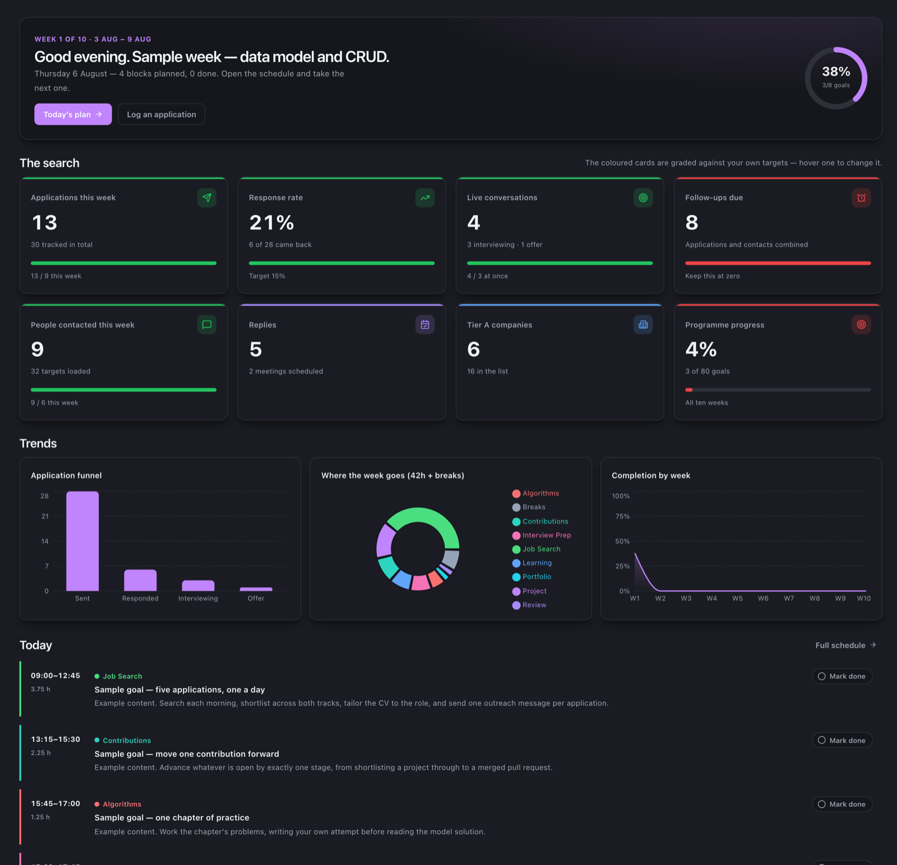
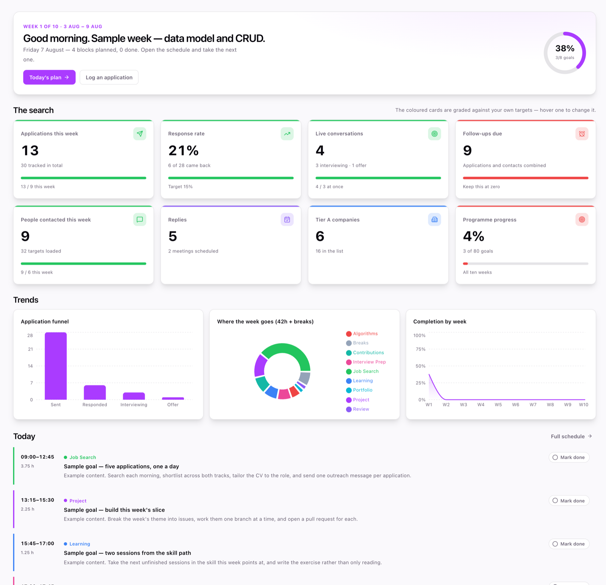

Front-end
What I have actually built with. Northstar is the fullest example, and everything in the work section below uses some of it.
Open to roles, internships and apprenticeships
I'm Gabriel Bellamy, based in Berkeley, California. After more than 15 years in customer operations and quality assurance at call centers, I'm now pursuing a long-held goal: moving into software engineering. I build websites and web applications full-stack, and I stay with them after they go live.
Featured project
A single workspace for running a career transition: plan the day, ship the project, track the search, and see whether any of it is working. Nine sections, one domain model, and a full stack behind it.


Selected work
A finished research site that is live and still mine to maintain, a tracker with zero dependencies, and the component work that led to Northstar. Every one of them is on GitHub.
Stack
What I have shipped with, what I learned in the program but have not shipped yet, and what I use to get work out the door.
What I have actually built with. Northstar is the fullest example, and everything in the work section below uses some of it.
Shipped in Northstar: an API on serverless functions, Prisma over PostgreSQL, accounts with hashed passwords and signed session cookies. Express and Playwright are from the Codecademy program, not from a project of mine.
What I actually use day to day, and how the work gets from my machine to a public URL.
About
I came to engineering the long way round. From 2005 I spent nine years at Atento on the Movistar account, starting on the phones and moving into corporate accounts: technical installations, equipment, billing, and the businesses that called when their service stopped working.
Then six years at ISGF, on the Orange account. I started as a support agent, became Team Leader of twelve, and moved into the Quality department, where I audited calls and oversaw quality across a floor of around 80 agents in seven teams. Auditing quality is reading a process closely enough to find where it actually breaks, then writing the fix down so it holds after you leave the room.
None of that was writing code. But over 15 years of finding the broken step, documenting it, and checking whether the fix survived contact with reality turns out to transfer more cleanly than I expected.
I studied Digital Interaction and Multimedia at the Universitat Oberta de Catalunya from 2020 to 2022, then completed the Codecademy Full-Stack Engineer Program in May 2026. Since November 2024 I have been the sole developer of diamondlab.bio, a live site for a research lab at UC Berkeley's Innovative Genomics Institute, working directly with its principal investigator from the first brief to deployment. I look after the code; the lab manager updates content alongside me.
I'm based in Berkeley, California and authorized to work in the U.S. What I'm looking for is a team: full-time, part-time, an internship, an apprenticeship or volunteer work. I care far more about being somewhere I can practise, learn and contribute than about the label on the role.
I work natively in Spanish, Catalan and French, and professionally in English.
Innovative Genomics Institute, UC Berkeley. Sole developer of diamondlab.bio, brief to deployment, scoring 100 on Lighthouse accessibility, best practices and SEO. Still maintained, with the lab manager handling content updates.
Front end, back end, databases, testing and deployment.
Bachelor's Degree, Digital Interaction and Multimedia.
Support agent, then Team Leader of twelve, then quality across a floor of around 80 agents in seven teams. Client: Orange.
Customer service, then corporate accounts: technical installations, equipment and billing. Client: Movistar.
Contact
I'm looking for a team to join: a job, an internship, an apprenticeship or volunteer work, whichever fits how you bring people in. And I'm just as glad to talk about a project when you're not hiring at all. Either way, the inbox is the fastest route.
gbielbellamy@gmail.com